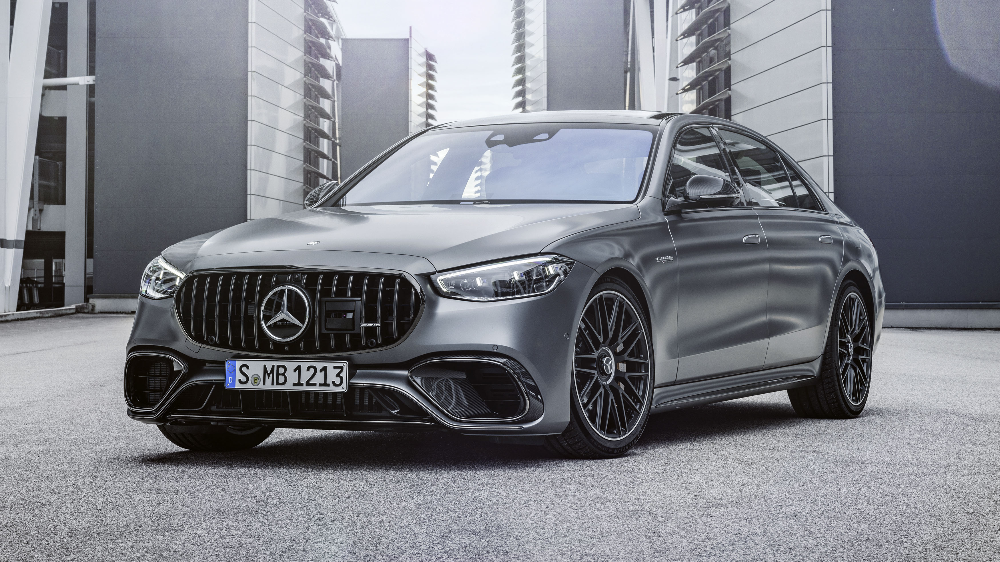
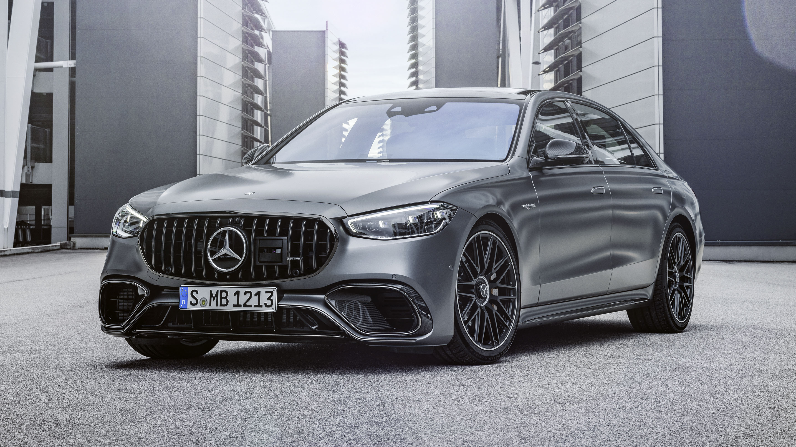

The RS6 is vastly superior in terms of performance and luxury, but the AE86 is more focused on affordable, hands-on driving. The AE86 is ideal for modification enthusiasts, while the RS6 offers luxury, tech, and extreme performance in a family-friendly package.
The M5 offers luxury and all-around performance that the 240SX can’t match, while the 240SX is a more affordable, modifiable option, perfect for motorsport projects. The M5 excels in speed and comfort, whereas the 240SX is ideal for those seeking a hands-on driving experience.
The S2000 focuses on driver engagement and high-revving excitement, while the S63 is built for those who desire effortless performance and luxury. The S63 offers a more refined and comfortable experience, while the S2000 is for those seeking raw performance in a lightweight, agile package.
The Japanese and German car markets both have distinct identities and cater to different driving experiences. JDM cars like the Nissan 240SX, Toyota AE86, and Honda S2000 are celebrated for their modifiability, lightweight design, and focus on driver engagement. These cars offer enthusiasts an affordable entry point into performance driving, with a strong emphasis on tuning potential and hands-on customization. They are ideal for those seeking a personalized driving experience, particularly in motorsports like drifting.
On the other hand, German cars such as the BMW M5, Audi RS6, and Mercedes-Benz S63 emphasize luxury, refinement, and cutting-edge technology while still delivering impressive performance. German vehicles are known for their engineering precision, advanced technology, and sophisticated driving dynamics, offering an excellent balance of comfort, speed, and all-around usability. These cars cater to those who want luxury and performance without compromising on refinement, making them perfect for both daily driving and high-speed thrills.
In conclusion, if you value a car with affordable tuning potential, raw driving experience, and a focus on modification, the JDM market offers cars that are easily customizable and incredibly fun to drive. However, if you prefer luxury, advanced tech, and refined performance, the German market delivers an experience that combines performance with sophisticated features and comfort. Both markets offer something unique, with Japanese cars focusing on hands-on driving and modding, and German cars excelling in luxury performance and engineering.